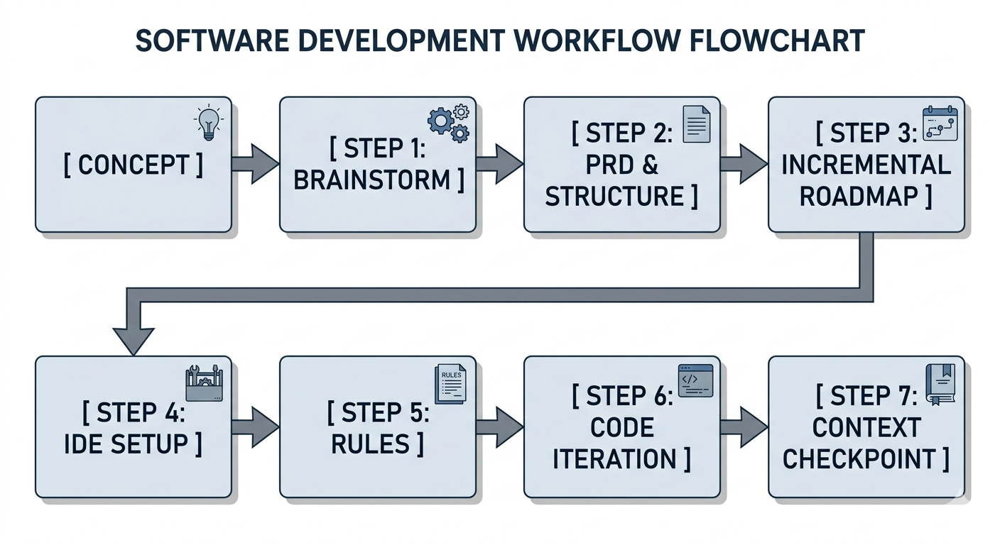

Your own coding AI,
running on your local GPU.
A step-by-step build for a fully local AI dev assistant in VS Code — Ollama for inference, Qwen2.5-Coder on your GPU, and a self-indexing "second brain" over your project. No subscription, no code leaving the machine.
The VRAM budget
VRAM load: OptimalBuild it, step by step
Run these in order on Windows. Keep the laptop plugged in the whole time.
Attempt to configure a system with GPU
Plug in and set Windows to Best Performance (Settings → System → Power) — laptop GPUs throttle hard on battery and you'll lose most of your speed.
Make sure your dedicated GPU handles the compute work. The integrated graphics processor (like onboard Radeon or Intel graphics) should be bypassed for heavy loading. Update to the current drivers (NVIDIA CUDA or AMD ROCm runtimes) so Ollama has full acceleration.
Install Ollama
Download the Windows installer from ollama.com. It runs as a background service on localhost:11434 and every tool below talks to it.
Pull your models
Three small, code-tuned models. They land on your SSD (a few GB total — you've got 500 GB, no concern).
Confirm GPU offload
Load the 7B and check it actually landed on the card rather than the CPU.
In ollama ps, the PROCESSOR column should read GPU (or mostly GPU). Watch live VRAM with nvidia-smi -l 1 in a second window.
Install VS Code + Continue
Install VS Code, then add the Continue extension from the Extensions marketplace. It handles autocomplete, chat, edits, and local codebase indexing — all pointed at your Ollama models.
Point Continue at your local models
Open the Continue panel → settings (gear) → edit config. Use this as a starting config.yaml, then tweak. (Continue's schema shifts between versions — if a field is rejected, check their docs.)
Build the "second brain"
With the embed model set, Continue indexes your project locally and answers questions with retrieved chunks — so you spend far fewer tokens than pasting whole files. In the chat box, type @codebase then your question.
Agentic editingoptional
Want the Claude-Code-style "do this whole task" loop? Install Cline, set the provider to Ollama and the model to qwen2.5-coder:7b. It scaffolds across files and runs your tests — just expect it to be slower and more error-prone than a cloud model, since a local 7B is doing the reasoning.
Tune for your GPU
Run one 7B at a time. Keep context at 4k–8k. Stay plugged in. If chat crawls, drop context or fall back to the 3B. Your system RAM holds the OS plus any CPU-offloaded layers, so close heavy apps (Android Studio especially) while a model is loaded.
The Vibe Coding Playbook
My custom 7-step execution workflow to build products fast by orchestrating AI without getting bogged down in syntax.

Brainstorm with AI on your raw idea
Treat the AI model as your product manager. Dive deep into the product concept to validate architecture, catch structural loopholes, and define MVP requirements before writing a single line of code.
Create Project Structure & PRD
Consolidate your finalized brainstorm into formal blueprints. Instruct the AI to generate a Markdown file outlining directory systems, functional tasks, and strict local requirements.
Ask for step-by-step testable prompts
Break the broad PRD down into a sequential, atomic roadmap. Do not allow the AI to build everything at once. Request specific, modular prompts that focus on building one testable component at a time.
Connect VS Code to your Local AI engine
Boot up your coding workspace and wire up your local intelligence. Link an IDE environment (like Continue or Roo Code) directly to Ollama or your local compatible model API endpoint.
Cloud Sandbox Alternative: If you prefer to bypass local desktop configurations, you can execute these playbook steps on rapid AI-native development platforms like Lovable, Replit, or Vercel (v0). These web apps manage setup, compile dependencies, and preview interfaces entirely in-browser.
Define workspace dependencies and system rules
Protect your workspace from AI hallucinations. Populate your requirements.txt or package.json with locked versions, and configure a custom workspace rules file (e.g., .cursorrules) to declare structural guidelines.
Execute prompting roadmap, step-by-step
Feed the AI the incremental prompt roadmap from Step 3, one piece at a time. Run localized verification scripts instantly after the code is generated. Never continue to the next module until the current one is tested and working.
Generate and maintain the context file
Avoid context window bloating! After a step tests OK, ask the AI to generate/update an external context_checkpoint.md. This acts as a rolling state machine summary of what's been built, exported APIs, and what needs to be made for the next steps.
Feature-Specific Partitioning: To keep context windows maximally efficient, create and maintain separate context files for each individual feature (e.g., context_auth.md, context_audio_engine.md, context_search_rag.md) instead of keeping everything in a single oversized tracker. Feed the AI only the specific feature checkpoints relevant to your active task.
Off the map?
The steps cover the build. For the "but what about my specific…" questions, ask Gemini below.